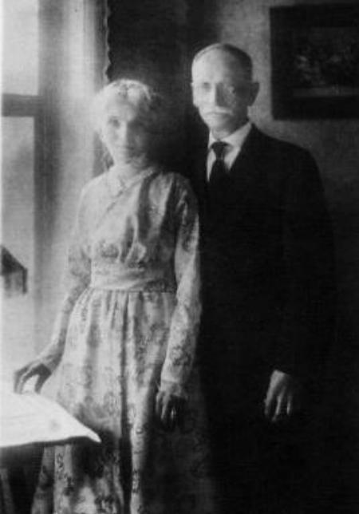
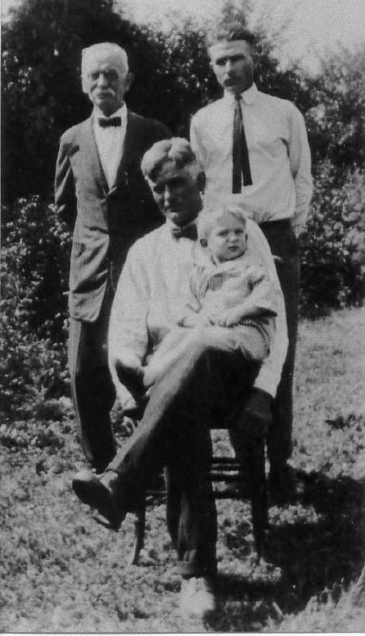
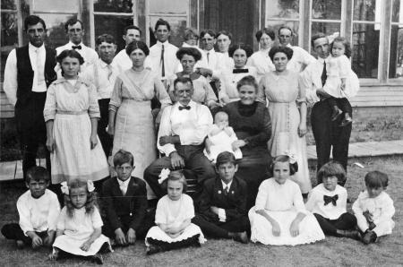
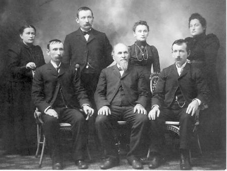

| 
Nicholas Streff 1838-1935 Anna Marguerite Streff nee Deisch 1845-1922 50th Wedding Anniversary November 1915 |
 Frank James 1873-1969, Philip Carroll 1921- |
|
| |
 Loda, Illinois 1913 |
|
|
|
Rear:
Oscar Prather Sr.,
Nicholas Streff,
Jacob Streff,
Adrian Prather,
Frances Streff (Will's),
William Streff,
Lizzie (Endres) Streff,
Margaret Philmony (married Ed),
Ed Streff
Standing: Lucille Streff, Dan Mc Nelis, Mary Streff Prather, Tillie (Matilda) Streff McNelis, Jewel (Doodie) Streff, Annie Streff, & Al Schatlanik holding Marcella Seated: Frank James & Catherine Demuth Streff holding Leona Streff? (Will's) Front: Ed Prather? Regina Streff (Will's), Bill Prather? Cecilia Streff (Will's), Oscar Prather, Margaret Streff, Len Prather, Les Prather |
|
|  Mary 1858-1927, Paul 1867-1952, Kate 1871-1955, Susan 1864-1930 Seated: Frank 1863-1944, Jacob 1834-1919, Nicholas 1860-1953 |
Jacob Streff, Maria Schmitt Streff Monument Holy Cross Cemetery, Belgium, Wisconsin |